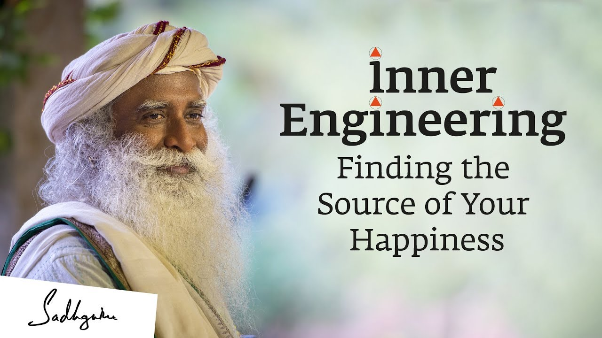
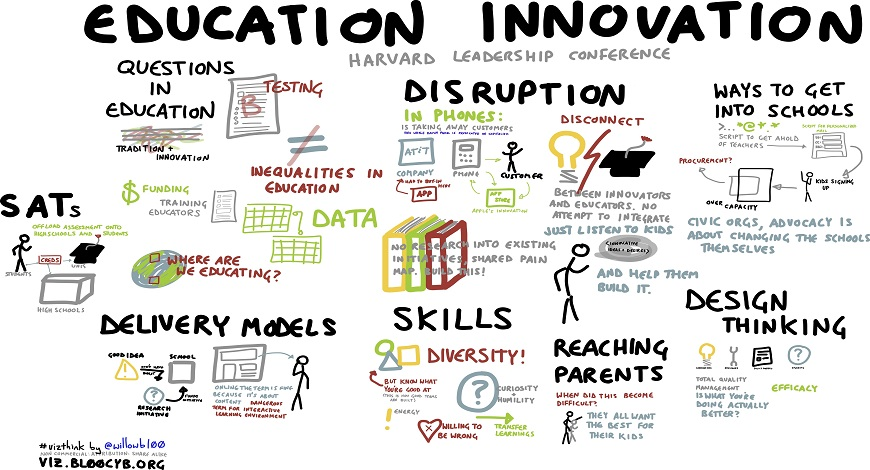

Themes Details

Space Technologies
The field of space technologies offers the most innovative breakthroughs especially in the recent years. From micro rocket launches to manned space transport, the commercial space sector has been taking giant steps forward. With space technologies going global, the leading players in space travel are no longer limited to Russia or the US. Instead, several nations including China, UAE, Guatemala, Slovenia, Monaco and Iran are also making significant progress in this domain. India, too, is positioned uniquely to make its own forays in this sector. Tune in to find out the latest innovations in Space Technologies!
Management & Business Process
The economic success of any nation entails an impeccable management of their business and manpower resources. As sustainable development goals become an essential part of business, innovation management will play a critical role in disrupting the current extravagant business processes and aligning them to a more sustainable approach while ensuring high business performance. While India has set its own global footprint in the service sector, the nation still continues to explore possibilities for a more streamlined management across several sectors. Join us to deep-dive into the latest in management models!
Food & Agriculture
Agriculture is the largest source of livelihoods in India. With 70 per cent of rural households still depend primarily on agriculture for their livelihood, it involves about 82 per cent of farmers being small and marginal. It is no doubt then that for our nation to make its most ground-level and widespread growth that will reach its rural population, we must focus on this sector. Innovative strategies can greatly uplift and streamline this sector. Let’s explore these ideas from our thought leaders at this conference!
Inner Engineering
Our modern, demanding lifestyles and the rapid corporatization of our nation has significantly impacted our countrymen. Once known to be a spiritual haven globally, India today is home to 43% of its population that has been diagnosed with depression, according to a recent survey. As the nation continues its path-breaking conversations on the importance of mental health with many renowned celebrities openly addressing these topics in public platforms, the country stands on the verge of making a crucial change for its millions. Inner Engineering is the need of the hour – a systematic, scientific approach that serves as a guideline and respite for every individual battling everyday stresses, anxieties, fears and depressive thoughts. Attend the conference to find out how you can begin your life transformation – one small step at a time!

Art, Music, Drama, Film and Literature
The spectrum of various forms of arts allow for creative self-expression of an artist. Since time immemorial, civilizations and cultures have often been most strongly represented by their artistic contributions. India is home to numerous diverse cultures, all with their own distinctive forms of arts. Our country also has an ancient lineage in these forms – whether its Indian Classical Music, Drama, Film or Literature. Taking ahead this rich heritage into the next generation, many young artists in India are now going through their own renaissance and finding new artistic avenues of expression while redefining our ancient heritage in modern times. Join us for a muse-worthy conversation on how the modern Indian artists are pushing the envelope while staying true to Indian ethos!
Alternative Therapies
The Western medical and healthcare system comes with grave consequences to mankind. Based primarily on capitalism and profiting the pharmaceutical sector, the system focuses on immediate diagnosis and strong medication rather than on the holistic healing of the body. This has given rise to a renewed interest in alternative therapies that believe in a holistic approach. India herself is home to many alternative therapies including Ayurveda, Homeopathy, Yoga, Herbal Medicine and much more. Rooted in priceless ancient wisdom, India promises natural healing remedies which are impactful and offer a long-term healing solution for the body. Dive into our engaging conversations on path-breaking alternative therapies that are becoming the modern-day cure for many!
Healthcare & SDGs
With good health and well-being making it as the third goal amongst the 17 Sustainable Development Goals (SDGs) charted by the United Nations to ensure global welfare of humanity, Vision 2030 will require significant changes in our healthcare system. Disruptive approaches must be adopted defying the stereotypical Western medical system that is based on serving the profit-making interests of its medical, healthcare and pharmaceutical sector. Our thought leaders in this sector are excited to share innovative ideas on the way forward to health and wellness in the modern times!
Innovation in Education
The post-independence education system in India has often come under critical lens for bogging down our young minds with an expansive syllabus that is driven by the pressure to score high marks rather than develop a depth of understanding. The current education system promotes bookish knowledge and does not encourage original thought nor does it promote innovative thinking.
While the new National Education Policy (NEP) aims to make education available to all by encouraging the use of online and technological tools, the nation awaits innovative approaches within the education sector to cater to its millions. Localizing education will help the country gain its own sense of identity and give its own regional knowledge, history and wisdom a much-needed space within its own education system. However, it remains to be seen how the new NEP will shape the country in the years to come.
A value-based education with a strong focus on leadership skills and ingrained in Yoga and meditation practices to develop a grounded and balanced personality must begin at school to ensure progressive citizens. Our panel of experts are here to discuss challenges and innovative ideas that can transform our education system in the country!
